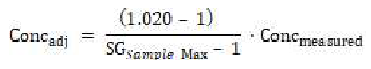
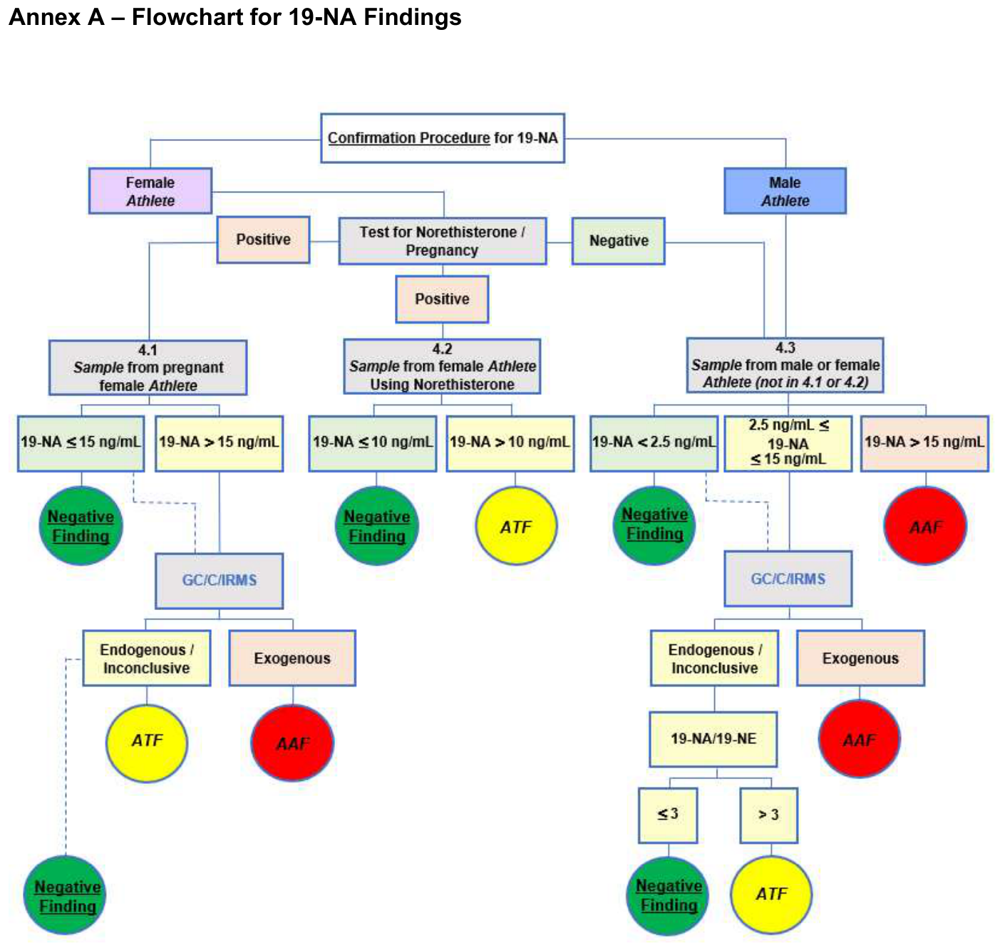

Technical Documents · TD2021NA
Edition v2.0, 2021 (version 2.0) · effective 1 June 2021 · superseded
Retrieved on 25 November 2026 from https://www.wada-ama.org/sites/default/files/resources/files/td2021na_final_eng_v2.0_m.pdf
Editions: v1.1, 2027 (current) · v2.0, 2021 · v1.0, 2021 · v1.0, 2019 · v1.0, 2017 · v1.0, 2016 · v1.0, 2015 · v1.0, 2014 · v1.0, 2012 · v1.0, 2010 · v1.0, 2010 · v1.0, 2004
p. 1
HARMONIZATION OF ANALYSIS AND REPORTING OF 19-NORSTEROIDS RELATED TO NANDROLONE
1.0 Introduction
This Technical Document (TD) has been established to harmonize the Confirmation Procedure (CP) for the analysis and reporting of findings for 19-norsteroids related to nandrolone by Laboratories.
The detection of the Use of nandrolone (19-nortestosterone) and other 19-norsteroids (e.g. 19-norandrostenedione, 19-norandrostenediol) is based primarily upon the identification of the main urinary Metabolite, 19-norandrosterone (19-NA). More than one Metabolite of administered 19-norsteroids may be detected in urine Samples and reported [e.g. 19-noretiocholanolone (19-NE)]; however, the identification of 19-NA, including the demonstration, when required, that the 19-NA is not of endogenous origin, is sufficient to report an Adverse Analytical Finding (AAF).
[Comment: In the context of this TD, "endogenous" origins of 19-NA, at levels higher than 2 ng/mL, include i); pregnancy[1-3]; ii) in-situ microbial degradation of androsterone (A) to 19-NA[4]; and iii) consumption of edible parts of non-castrated male pigs[3, 5-10]. This TD aims at providing elements to determine the source of 19-NA in each of these cases.]
2.0 Initial Testing Procedure (ITP)
The initial test must detect the presence of 19-NA in urine Samples at levels greater than or equal to ( CP.
The Initial Testing Procedure (ITP) shall include the following characteristics:
- A single calibration point at 15 ng/mL;
- An appropriate labeled (e.g.² H or 13 C) internal standard;
- The use of a negative (NQC) and a positive quality control (PQC) samples.
3.0 Confirmation Procedures (CP)
In addition to meeting the identification criteria described in the TD IDCR[11], the Laboratory shall confirm the estimated concentration of 19-NA (and 19-NE, if necessary) and/or perform GC/C/IRMS analysis[12] to establish the origin (endogenous or exogenous) of the 19-NA detected (or 19-NE, if applicable).
p. 2
3.1 Identification and Estimation of Concentration
The CP to estimate the concentration of 19-NA in the Sample shall include the following characteristics:
- A single calibration point at 15 ng/mL, preferably with the 19-NA concentration based on/traceable to a Certified Reference Material (CRM);
- An appropriate labeled internal standard (e.g. 19-NA-² H₄-glucuronide);
- The use of a NQC (at less than (<) 2.5 ng/mL) and a PQC (at greater than (>) 15 ng/mL).
[Comment: No quantification (and, therefore, no Measurement Uncertainty estimation) is required in the CP for 19-NA. The application of a one-point calibrator at 15 ng/mL and appropriate QC samples is sufficient to confirm the estimated 19-NA concentration.]
[Comment: The NQC and PQC shall be subjected to the same sample preparation procedure as the Sample Aliquot.]
3.2 GC/C/IRMS Analysis
3.2.1 Conducting GC/C/IRMS Analysis
The decision to proceed to the GC/C/IRMS analysis shall be guided by the following:
- GC/C/IRMS analysis is not necessary on Samples in which the (SG-adjusted, if needed) concentration of 19-NA is estimated above (>) 15 ng/mL (except in cases of pregnancy), or when the presence of 3,5-tetrahydronorethisterone (THNE) has been detected in the Sample of a female Athlete[13];
[Comment: When the estimated concentration of 19-NA is greater than (>) 15 ng/mL, to decide whether the GC/C/IRMS analysis shall be performed or not, the 19-NA concentration in the Sample shall be adjusted for the urine specific gravity (SG), if SGSample > 1.018, according to:
\[Conc _ { a j } = \frac { ( 1 . 0 2 0 - 1 ) } { S G _ { S a m p l e } \, { \max } ^ { - \, 1 } } \cdot \, \text {Conc} _ { \max } \, { \real } s u r d\]

Refer to the effective TD DL[14] for instructions on calculating SGSample_Max].
- GC/C/IRMS analysis is mandatory in cases of pregnancy, when the estimated 19-NA concentration is greater than (>) 15 ng/mL. However, the GC/C/IRMS analysis may also be performed to ascertain the endogenous origin of 19-NA when the estimated concentration of 19-NA in a urine Sample of a pregnant female is between 2.5 and 15 ng/mL.
[Comment: For Samples from pregnant females, for which the GC/C/IRMS analysis is only mandatory for 19-NA concentrations greater than (>) 15 ng/mL, the adjustment of the 19-NA concentration for a high SG (> 1.018) is not strictly necessary].
p. 3
- GC/C/IRMS analysis is mandatory on Samples in which the concentration of 19-NA is of THNE;
- GC/C/IRMS analysis may be performed on Samples containing 19-NA at estimated concentrations lower than (<) 2.5 ng/mL.
[Comment: For Samples with 19-15 ng/mL, the adjustment of the 19-NA concentration for a high SG (> 1.018) is not needed, since such adjustment may only lead to lower concentrations. For such Samples, GC/C/IRMS analysis is required to determine the origin of the 19-NA and may be performed at concentrations below 2.5 ng/mL, depending on the Laboratory's analytical capacity.]
- When 5 -reductase inhibitor activity is suspected (e.g. abnormally low A/Etio ratio) or confirmed (e.g. detection of finasteride and/or dutasteride Metabolites) in a urine Sample, and this does not allow a reliable analysis of 19-NA, Laboratories should target 19-NE (which is detected at a higher concentration than 19-NA) for GC/C/IRMS analysis to determine the administration of 19-norsteroids. The GC/C/IRMS method characteristics and data evaluation criteria shall follow the same requirements as for 19-NA determination (see Article 3.2.3).
Laboratories that do not have the analytical capacity to perform GC/C/IRMS analysis for 19-NA (or 19-NE, if applicable) shall, in consultation with the Testing Authority (or the Results Management Authority, if different), have Samples transferred to and analyzed by another Laboratory that has such analytical capacity (Analytical Method included in the Laboratory's Scope of ISO/IEC 17025 Accreditation).
Due to the occurrence of preparations of 19-norsteroids with a carbon isotopic signature ( 13 C/¹² C) close to that of endogenous human urinary steroids (e.g. ¹³C19-NA = -16 ‰ to -24 ‰) [9, 10, 15], the result of the GC/C/IRMS analysis of the excreted 19-NA may not always readily indicate its exogenous origin in Samples. Therefore, in Samples from males and non-pregnant females, when the estimated concentration of 19-NA is equal to or less than ( ) 15 ng/mL and the result of the GC/C/IRMS analysis is negative (i.e. not consistent with an exogenous origin of 19-NA) or inconclusive, the Laboratory shall consider the ratio of 19-NA to 19-NE (based on the respective estimated concentrations) as a possible indicator of the administration of 19-norsteroids when the in situ formation of 19-NA and 19-NE is excluded[3].
[Comment: The possible Use for doping purposes of 19-norsteroid preparations with a pseudo-endogenous carbon isotopic signature may be established on the basis of the pharmacokinetics of 19-NA excretion, as determined from the analysis of previously collected and/or follow-up Samples [3, 5, 16-18].
Following consumption of the edible parts of non-castrated male pigs, concentrations of excreted 19-NA in urine are usually in the low ng/mL range (< 10 ng/mL), although higher concentrations have been exceptionally reported[3]. The origin of the urinary 19-NA may not be established by GC/C/IRMS analysis, since the varying die ¹³C values which may range between -15 ‰ and -25 ‰[9]. Therefore, if the consumption of edible parts of p. 4 intact pigs is invoked by an Athlete as the unlikely origin of a 19-NA finding, this may be established based on the pharmacokinetics of 19-NA excretion[3, 5, 16-18]. Profiles of 19-NA and 19-NE excretion following oral ingestion will have a different time course than following an injection of 19-norsteroids.]
3.2.2 GC/C/IRMS Test Method Validation Requirements
- The Laboratory shall refer to the TD IRMS[12] for general GC/C/IRMS Test Method validation requirements;
- The Laboratory shall validate the use of at least two (2) ERCs [e.g. Androsterone (A) and pregnanediol (PD)];
- The standard combined uncertainty (uc) associate ¹³C values, as estimated by the Laboratory during the GC/C/IRMS method validation, shall not be greater the uc_Max of 1.0 ‰ for 19-NA or 0.7 ‰ for the ERCs.
3.2.3 GC/C/IRMS Analysis Requirements
The GC/C/IRMS method to establish the origin of the 19-NA detected shall include the following characteristics (also refer to the TD IRMS[12] for general method characteristics):
- Each sequence of analysis by GC/C/IRMS shall include:
- ¹³C values of 19-NA and endogenous reference compound(s) (ERC) in a normal endogenous range (i.e. between -16 ‰ and -26 ‰), with an absolute difference in ¹³C values ( ¹³C ) between ERC and 19-NA not greater than ( ) 3 ‰;
[Comment: The normal endogenous rang ¹³C values between -16 ‰ and -26 ‰ reflects the range of¹³ C isotopic signatures of urinary steroid Metabolites in humans around the world; the QC samples will reflect the geographical location of the Laboratory and do not have to cover the entire possible range of ¹³C values.]
- ¹³C value of ERC in a normal endogenous range (i.e. between -16 ‰ and -26 ‰), with a ¹³C between ERC and 19-NA greater than (>) 3 ‰.
[Comment: The NQC and PQC shall be subjected to the same sample preparation procedure as the Sample Aliquot.]
- The same Sample Aliquot(s) that were subjected to GC/C/IRMS analysis shall be analyzed by GC-MS under similar chromatographic conditions to ensure the identity of the peaks of 19-NA and ERC(s), and the absence of significant interference prior to reporting an AAF or an ATF based on GC/C/IRMS results.
[Comment: Minor differences in retention times (RT) between the two techniques are expected. The provisions of the TD IDCR[11] shall be followed. In addition, a full scan spectrum shall be obtained over the complete width of the steroid chromatographic peak(s) of interest to document the lack of interference. GC-MS identification is not necessary when the GC/C/IRMS results are negative.]
p. 5
- The GC/C/IRMS confirmation analyses shall include the identification of the 19-NA peak identity by GC-MS according to the identification criteria described in the TD IDCR[11].
[Comment: Minor differences in retention time between the two techniques are expected.]
3.2.4 Interpretation of GC/C/IRMS Results
To reject the hypothesis of endogenous or in-situ 19-NA formation based on the application of GC/C/IRMS analysis (i.e. to report the finding as an AAF), the following criterion shall be met:
- The ¹³C values between two (2) ERCs and 19-NA, i.e. | ¹³C| = | 13 CERC - 13 C19-NA|, is greater than (>) 3 ‰ (refer to the TD IRMS[12]).
[Comment: Androsterone (A) shall not be used as an ERC when there are indications of the administration of testosterone (T) or its precursors (e.g. prasterone). In such cases, an alternative ERC as described in TD IRMS[12] shall be used.]
3.3 Additional Tests
3.3.1 Test for Norethisterone and Pregnancy
19-NA is excreted during pregnancy[1-3] and as a minor Metabolite of norethisterone[13], a progestogen agent of permitted use present in some oral contraceptives. Therefore, when the estimated concentration of 19-Sample of a female Athlete, the Laboratory shall:
- Establish the presence or absence of THNE, the main Metabolite of norethisterone, and if not compatible with the 19-NA level:
- Test for pregnancy based on the measurement of urinary human Chorionic Gonadotrophin (hCG).
[Comment: When testing for the presence of THNE, Laboratories should target the detection of the 3 ,5 isomer, namely 5 -estran-17 -ethynyl-3 ,17 -diol [13]. 19-NA being a minor Metabolite of norethisterone, 19-NA concentrations at levels higher than (>)10 ng/mL should be associated with a very intense THNE peak signal in the Sample.]
3.3.2 Test for Demethylation
In addition, but rarely, 19-NA may be produced in urine Samples, in small concentrations, by in-situ 19-demethylation of androsterone (A)[4]. This potential in-situ formation of 19-NA shall be verified by GC/C/IRMS analysis[3, 19].
p. 6
3.4 "B" Sample CP
- In cases when the AAF for the "A" Sample is based on the results of a GC/C/IRMS analysis, the "B" Sample CP also requires the GC/C/IRMS analysis and identification of 19-NA in accordance with the TD IDCR[11];
- In cases when the estimated concentration of 19-NA (SG-adjusted, if needed) is shown to be greater than (>) 15 ng/mL in a Sample collected from a male or a non-pregnant female Athlete, the "B" Sample CP requires the identification of 19-NA only, in accordance with the TD IDCR[11]).
4.0 Reporting
The Laboratory shall report 19-NA detected in a Sample from a male or a female Athlete as defined in the Table below:
| Sample Origin / Test Report | Adverse Analytical Finding | Atypical Finding | Negative Finding |
|---|---|---|---|
| 4.1 Pregnant Female Athletes | o Results of the GC/C/IRMS analysis are consistent with the exogenous origin of 19- NA (see Art. 3.2.3). | o Estimated concentration of 19-NA > 15 ng/mL; AND o Results of the mandatory GC/C/IRMS analysis are inconclusive or do not meet the criteria supporting an exogenous origin of 19-NA (see Art. 3.2.3). | No other Prohibited Substance or Prohibited Method has been confirmed in the Sample; AND o Estimated concentration of 19-NA 15 ng/mL; AND o GC/C/IRMS analysis was either not performed or the results are inconclusive or consistent with an endogenous origin of 19- NA (see Art. 3.2.3). |
| Test Report | o Estimated concentration of 19-NA, expressed as L", as applicable; o Results of GC/C/IRMS analysis, including a comment indicating that the GC/C/IRMS finding is consistent with an exogenous origin of 19-NA, ¹³C values for 19-NA and the two ERCs as well as the associated uc (‰). o No reference to the pregnancy status of the Athlete shall be reported. | o Estimated concentration of 19-NA >15 ng/mL o Results of GC/C/IRMS analysis, including a comment indicating that the GC/C/IRMS finding is inconclusive or do not meet the criteria supporting an exogenous origin of 19-NA, the ¹³C values for 19-NA and the two ERCs as well as the associated uc (‰). o No reference to the pregnancy status of the Athlete shall be reported. | o No reference to the pregnancy status of the Athlete shall be reported |
p. 7
| 4.2 Female Athletes using Norethisterone | N/A | o Estimated concentration of 19-NA > 10 ng/mL; OR o The level of THNE appears incompatible with that of 19- NA. | o No other Prohibited Substance or Prohibited Method has been confirmed in the Sample; AND o Estimated concentration of 19-NA 10 ng/mL* and is compatible with that of THNE. |
|---|---|---|---|
| Test Report | N/A | o Estimated concentration of 19-NA >10 ng/mL; o A comment describing the finding that demonstrates the use of norethisterone or of any other substance that is converted to norethisterone and further metabolized to tetrahydronorethisterone (e.g. "19-NA was found in the Sample at an estimated concentration > 10 ng/mL. Tetrahydronorethisterone, a Metabolite of norethisterone, was also detected in the Sample at a concentration that is compatible with that of 19-NA". | No reference to the use of norethisterone shall be reported. |
| 4.3 Male or Female Athletes (neither pregnant nor using norethisterone) | o Estimated concentration of 19-NA > 15 ng/mL, OR o Estimated concentration of 19- AND o GC/C/IRMS results are consistent with an exogenous origin of 19-NA (see Art. 3.2.3). | o Estimated concentration of 19- ; AND o GC/C/IRMS results inconclusive or do not meet the criteria supporting an exogenous origin of 19-NA (see Art. 3.2.3); AND o 19-NA/19-NE > 3. | o No other Prohibited Substance or Prohibited Method has been confirmed in the Sample; AND o Estimated concentration of 19-NA < 2.5 ng/mL (and too low to perform GC/C/IRMS analysis). OR o Estimated concentration of 19- 2.5 ng/mL but 15 ng/mL; AND o the results of the GC/C/IRMS analysis are consistent with an endogenous origin (i.e. in- situ formation) of 19-NA; AND o 19-NA/19-NE 3 |
p. 8
| Test Report | If 19-NA > 15 ng/mL with no GC/C/IRMS analysis: o Estimated concentration of 19-NA >15 ng/mL; o For Samples from female Athletes: A comment explaining that pregnancy and the use of norethisterone were excluded as the source of 19-NA (e.g. "The 19-NA finding is not consistent with pregnancy or the use of norethisterone"). If 19- positive GC/C/IRMS results: o Estimated concentration of 19- o Results of GC/C/IRMS analysis, including a comment indicating that the GC/C/IRMS finding is consistent with an exogenous origin of 19-NA, ¹³C values for 19-NA and the two ERCs as well as the associated uc (‰); o For Samples from female Athletes, a comment explaining that the use of norethisterone was excluded as the source of 19-NA (e.g. "the 19-NA finding is not consistent with the use of norethisterone"). | o Estimated 19-NA o Results of GC/C/IRMS analysis, including a comment indicating that the GC/C/IRMS results are inconclusive (e.g. due to the presence of interfering compound(s) or any other factor preventing a reliable GC/C/IRMS analysis) or do not meet the criteria supporting an exogenous origin of 19-NA ¹³C values for 19-NA and the two ERCs as well as the associated uc (‰); o Ratio of 19-NA to 19-NE; o For Samples from female Athletes, clarify that pregnancy was excluded as the source of 19-NA (e.g. "the 19-NA finding is not consistent with pregnancy"); o Recommend to the Testing Authority/Results Management Authority to conduct follow-up no-notice tests on the Athlete as soon as possible and evaluate the pharmacokinetics of 19-NA excretion. |
|---|
5.0 References
[1] Reznik Y et al. Rising levels of 19-norstestosterone throughout pregnancy: determination by radioimmunoassay and validation by gas chromatography-mass spectrometry. J Clin Endocrinol Metab 63:1086-108, 1987.
[2] Mareck-Engelke U et al. 19-norandrosterone in pregnant women. In: Schanzer W, Geyer H, Gotzman A, et al. Recent Advances in Doping Analysis (8), Proceedings of the 18th Cologne Workshop on Dope Analysis. Cologne: Sport & Buch Straub: 145-54, 2000.
[3] Guay C et al. Excretion of norsteroids' phase II metabolites of different origin in human. Steroids 74: 350-8, 2009.
[4] Grosse J et al. Formation of 19-norsteroids by in situ demethylations of endogenous steroids in stored urine samples. Steroids 70: 499-506, 2005.
p. 9
[5] Debruyckere G, de Sagher R, Van Peteghem C. Influence of the consumption of meat contaminated with anabolic steroids on doping tests. Anal Chim Acta 275: 49-56, 1993.
[6] Le Bizec B et al. Consequence of boar edible tissue consumption on urinary profiles of nandrolone metabolites. I. Mass spectrometric detection and quantification of 19-norandrosterone and 19-noretiocholanolone in human urine. Rapid Commun. Mass Spectrom. 14: 1058-65, 2000.
[7] Le Bizec B et al. Consequence of boar edible tissue consumption on urinary profiles of nandrolone metabolites. II. Identification and quantification of 19-norsteroids responsible for 19-norandrosterone and 19-noretiocholanolone excretion in human urine. Rapid Commun. Mass Spectrom. 15: 1442-47, 2001.
[8] Ayotte C. Significance of 19-norandrosterone in athletes' urine samples. Br. J. Sports Med. 40: 25-29, 2006.
[9] Hülsemann F et al. Case Study: Atypical 13 C values of urinary norandrosterone. Drug Test Anal. 10(11-12):1728-1733, 2018.
- [10]Hülsemann F et al. Excretion of 19-norandrosterone after consumption of boar meat. Drug Test Anal. (accepted for publication, 2020).
- [11]WADA Technical Document TD IDCR: Minimum Criteria for Chromatographic-Mass Spectrometric Confirmation of the Identity of Analytes for Doping Control Purposes.
- [12]WADA Technical Document TD IRMS: Detection of Synthetic Forms of Prohibited Substances by GC/C/IRMS.
- [13]Walker CJ et al. Doping in sport - 1. Excretion of 19-norandrosterone by healthy women, including those using contraceptives containing norethisterone. Steroids 74: 329-35, 2009.
- [14]WADA Technical Document TD DL: Decision Limits for the Confirmatory Quantification of Exogenous Threshold Substances by Chromatography-based Analytical Methods.
- [15]Brailsford AD et al. IRMS delta values (13 C) of nandrolone and testosterone products available in the UK: Implications for anti-doping. Drug Test Anal. 10(11-12):1722-1727, 2018
- [16]Bagchus WM et al. Pharmacokinetic evaluation of three different intramuscular doses of nandrolone decanoate: analysis of serum and urine samples in healthy men. J Clin Endocrtinol Metab 90(5): 2424-30, 2005.
- [17]Watson P et al. Urinary nandrolone metabolite detection after ingestion of a nandrolone precursor. Med Sci Sports Exerc. 41(4):766-72, 2009.
- [18]Palonek E et al. Atypical excretion profile and GC/C/IRMS findings may last for nine months after a single dose of nandrolone decanoate. Steroids 108: 105-11, 2016.
- [19]Hebestreit M et al. Determination of the origin of urinary norandrosterone traces by gas chromatography combustion isotope ratio mass spectrometry. Analyst 131:1021-6, 2006.
[Current versions of WADA Technical Documents may be found at https://www.wada-ama.org/en/what-we-do/science-medical/laboratories]
p. 10

Annex A - Flowchart for 19-NA Findings
Retrieved on 25 November 2026 from https://www.wada-ama.org/sites/default/files/resources/files/td2021na_final_eng_v2.0_m.pdf